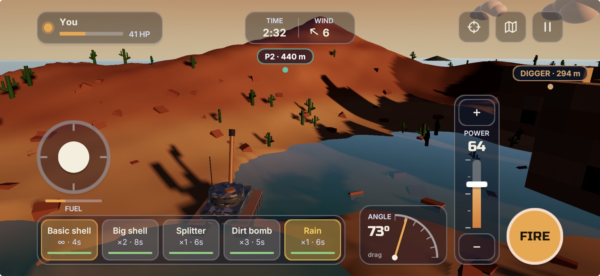
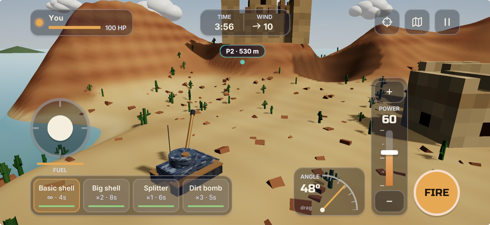
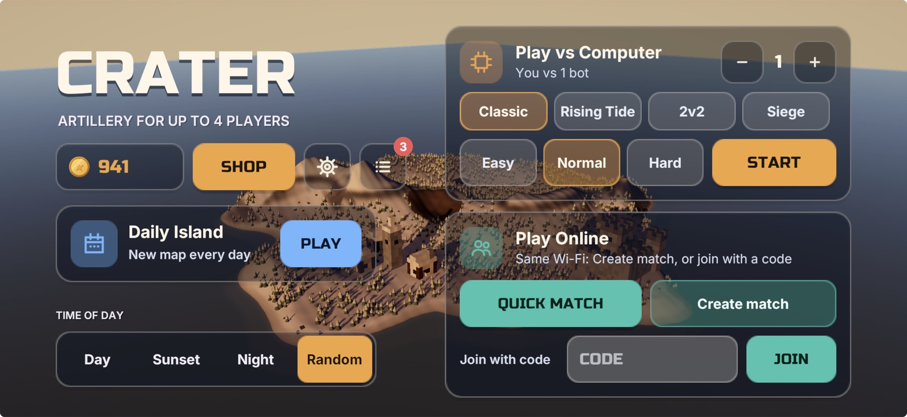

[ crater ] · real-time artillery
Testing nowon our own iPhones · TestFlight next · then the App Store
Every shot reshapes the island.
Tanks sit on a big island split by mountains. Lob shells high over the ridges or blast straight through them — every hit changes the ground, and the ground fights back.

players, on one island
barrels, for lobs behind a mountain
shells, each with its own reload
a match
[ how it plays ]
A physics puzzle on a reload timer.
Real time, not turn-based: everyone fires the moment their weapon has reloaded.
Angle, direction, power, wind and terrain all matter. Drop a near-vertical lob straight down behind a ridge.
Hit a ridge enough times and you cut a pass. Steep ground slides away, and the tanks on it fall.
Each weapon has its own reload, so you’re always choosing between firing fast and hitting hard.
Big shells that land in the sea send out a wave ring that shoves tanks near the shore.
Three looks for the same island. At night, explosions light it up.
Classic, Rising Tide, 2v2 and Siege — against bots offline, or with friends on the same Wi-Fi, who join with a 4-letter code.


[ the arsenal ]
Four shells, four tactics.
One of them does no damage at all — it builds a wall.
Built with overcli.
Crater came first: its island, terrain and cameras became the starting point for every game after it — and it’s being built the same way, with overcli.